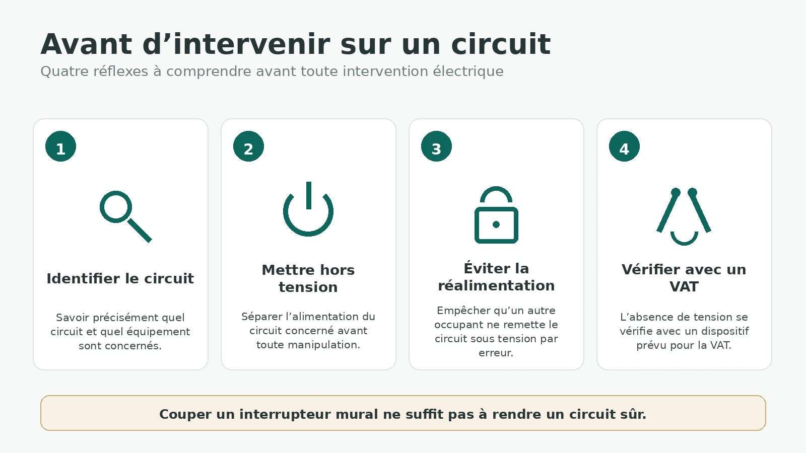
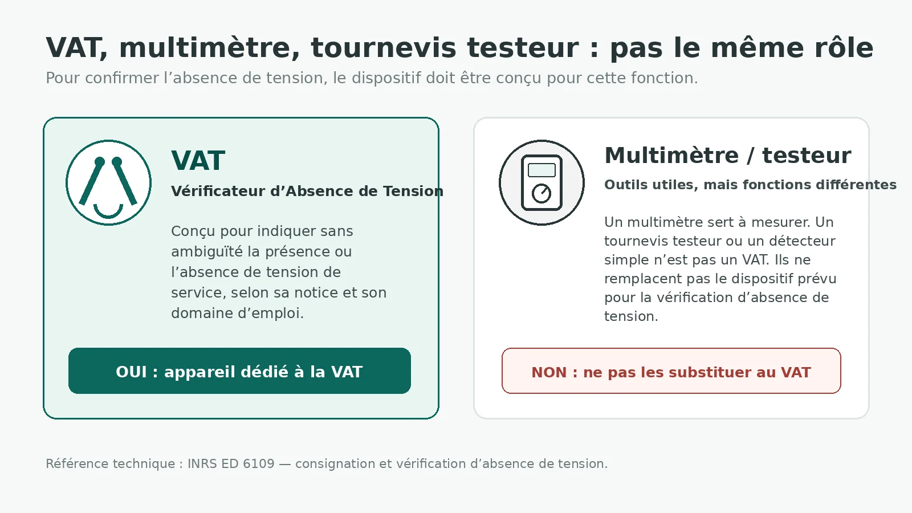
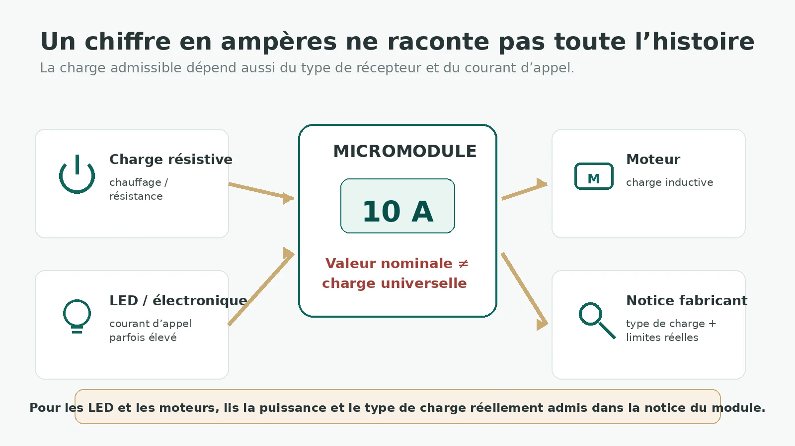

La domotique donne parfois une fausse impression de simplicité : un petit module, quatre bornes, une application et c’est parti. Sauf qu’à partir du moment où ce module est raccordé au 230 V, on n’est plus seulement dans l’objet connecté. On intervient sur l’installation électrique du logement.
Le but de cette page n’est donc pas de transformer quelqu’un en électricien en dix minutes. Elle sert à comprendre les bons réflexes, les erreurs qui reviennent souvent et les limites à ne pas franchir. Si tu ne sais pas identifier le circuit, utiliser le matériel de vérification adapté ou comprendre la notice du module, la bonne décision est de faire intervenir une personne compétente.
⚠️ Ce guide n’est pas une procédure d’intervention
Il explique des principes de sécurité et aide à décider si une opération est dans ton domaine de compétence. Toute intervention électrique doit respecter la réglementation applicable, la notice du matériel et les règles de prévention adaptées à la situation.
1. Domotique ne veut pas dire basse tension
Un capteur Zigbee sur pile et un micromodule de volet encastré derrière un interrupteur n’ont pas du tout le même niveau de risque. Le premier fonctionne avec une petite batterie. Le second peut commuter directement une alimentation secteur.
C’est une distinction importante parce que l’apparence du produit ne dit rien du danger. Un module de quelques centimètres peut être raccordé à la phase, au neutre et à une charge de plusieurs centaines de watts.
2. « J’ai coupé l’interrupteur » ne veut pas dire « c’est hors tension »
Un interrupteur mural sert à commander un équipement. Ce n’est pas une procédure de mise en sécurité de l’installation. Avant une intervention, il faut identifier le circuit concerné et le séparer de sa source d’alimentation de manière adaptée.
Dans le monde professionnel, la consignation électrique est d’ailleurs une procédure formelle : l’INRS décrit notamment la séparation, la condamnation, l’identification et la vérification d’absence de tension. Autrement dit, « j’ai baissé un disjoncteur » et « l’installation est sécurisée pour travailler » ne sont pas exactement la même chose.

3. Pour vérifier l’absence de tension, le multimètre n’est pas un VAT
C’est la correction la plus importante par rapport à l’ancienne version de cette page : un multimètre ou un tournevis testeur ne doit pas être présenté comme un substitut à un Vérificateur d’Absence de Tension.
L’INRS indique explicitement que les appareils de mesurage de type voltmètre et les tournevis testeurs ne sont pas des VAT. La vérification d’absence de tension doit utiliser un dispositif spécialement conçu pour cette fonction et adapté au domaine de tension concerné.
Ça ne veut pas dire qu’un multimètre est inutile : c’est un excellent instrument de mesure lorsque son utilisation est maîtrisée. Simplement, mesurer une tension et réaliser une VAT sont deux fonctions différentes.

Tu n’as jamais utilisé de VAT ?
Ce n’est pas le moment d’apprendre en improvisant devant des conducteurs du logement. Fais-toi accompagner ou confie l’intervention à quelqu’un qui maîtrise la procédure.
4. La couleur des fils aide, mais elle ne remplace pas l’identification
Dans une installation correctement réalisée selon les conventions actuelles, le bleu clair est réservé au neutre et le vert/jaune au conducteur de protection. Pour la phase et les retours, plusieurs autres couleurs peuvent être utilisées.
Mais une rénovation réserve parfois des surprises : ancienne installation, modification intermédiaire, erreur de câblage ou conducteur réutilisé. La couleur donne donc une indication, pas une autorisation de manipuler.
5. Section, disjoncteur et circuit doivent rester cohérents
Un micromodule s’ajoute à un circuit existant ; il ne permet pas d’augmenter ce que le circuit peut supporter. Le calibre du disjoncteur, la section des conducteurs et l’usage du circuit sont liés.
À titre de repères courants dans l’habitat, la NF C 15-100 prévoit notamment des conducteurs de 1,5 mm² avec une protection jusqu’à 16 A pour les circuits d’éclairage et de volets roulants, tandis que les circuits de prises peuvent, selon leur conception, être réalisés en 1,5 mm² / 16 A ou 2,5 mm² / 20 A.
Mais ces valeurs sont des maxima normatifs pour des configurations données, pas une recette à appliquer au hasard. Une protection existante peut être plus faible, un circuit peut être spécialisé, et la version de la norme applicable dépend aussi du contexte des travaux. Depuis 2025, la série NF C 15-100 issue de la révision 2024 constitue la référence pour les nouvelles installations et les modifications concernées.
Ne « monte » jamais un disjoncteur pour arranger un module
Si un appareil demande davantage que ce que le circuit existant peut supporter, la solution n’est pas de remplacer simplement la protection par un calibre supérieur. Le dimensionnement du circuit doit rester cohérent dans son ensemble.
6. « 10 A » ne signifie pas « je peux commuter n’importe quoi jusqu’à 2300 W »
C’est une autre erreur fréquente. La puissance qu’un relais peut commuter dépend du type de charge. Une résistance, une alimentation LED et un moteur ne sollicitent pas les contacts de la même manière.
Les éclairages LED et leurs alimentations peuvent notamment présenter un courant d’appel important au démarrage. Schneider Electric rappelle qu’il n’est pas possible de déduire une puissance LED admissible avec une simple règle universelle, car les lampes et drivers peuvent avoir des comportements très différents.
La règle « diviser systématiquement la puissance par 3 ou 4 » qui figurait auparavant sur DomoRepère est donc supprimée. La bonne information est celle de la notice du fabricant du micromodule : charge résistive, LED, capacitive, inductive, moteur, courant d’appel et puissance maximale correspondante.

7. Un module qui « rentre à peu près » n’est pas une installation propre
Derrière un interrupteur, l’espace est souvent le vrai problème. Ajouter un micromodule dans une boîte déjà chargée peut obliger à plier fortement les conducteurs, comprimer les connexions ou exercer une contrainte sur les bornes.
La profondeur nécessaire dépend de l’appareillage, du module, des connexions et du nombre de conducteurs. Il n’y a donc pas de règle DomoRepère du type « 50 mm = toujours bon ». On vérifie l’encombrement réel et les prescriptions du fabricant.
Même chose pour le dénudage : 10 ou 12 mm n’est pas une valeur universelle. La longueur doit correspondre à la borne ou au connecteur utilisé. Une indication est souvent moulée sur l’appareil ou donnée dans sa notice.
8. Quand est-ce que je m’arrête et j’appelle un professionnel ?
La réponse n’est pas seulement « dès qu’on ouvre le tableau ». Certaines opérations murales peuvent déjà dépasser ton niveau de compétence, tandis qu’un professionnel saura diagnostiquer rapidement une installation existante.
Je passerais la main notamment si :
- tu n’es pas certain d’avoir identifié le bon circuit ou les conducteurs ;
- tu ne maîtrises pas la vérification d’absence de tension ;
- le câblage ne correspond pas au schéma attendu ou les couleurs semblent incohérentes ;
- tu dois modifier les protections ou la distribution dans le tableau ;
- l’installation paraît ancienne, dégradée ou dépourvue des protections attendues ;
- la charge à piloter est un moteur, un chauffage ou un équipement dont les caractéristiques ne sont pas clairement compatibles avec le module ;
- tu as simplement un doute.
Ce dernier point n’est pas une formule de précaution pour remplir une page. En électricité, le doute est une information technique : il signifie qu’une donnée indispensable manque encore.
9. La checklist DomoRepère avant d’acheter un micromodule
En résumé
La sécurité électrique n’est pas la partie la plus spectaculaire d’un projet domotique, mais c’est celle qui doit passer avant toutes les autres.
Ne déduis pas la sécurité d’une couleur de fil, d’une position d’interrupteur ou d’un chiffre écrit en gros sur un relais. Identifie le circuit, utilise le matériel de vérification adapté, respecte la cohérence des protections et lis la notice du fabricant pour la charge réellement commandée.
Et surtout : une bonne installation domotique n’est pas celle qu’on a réussi à faire rentrer derrière l’interrupteur. C’est celle qui reste sûre, compréhensible et maintenable plusieurs années plus tard.